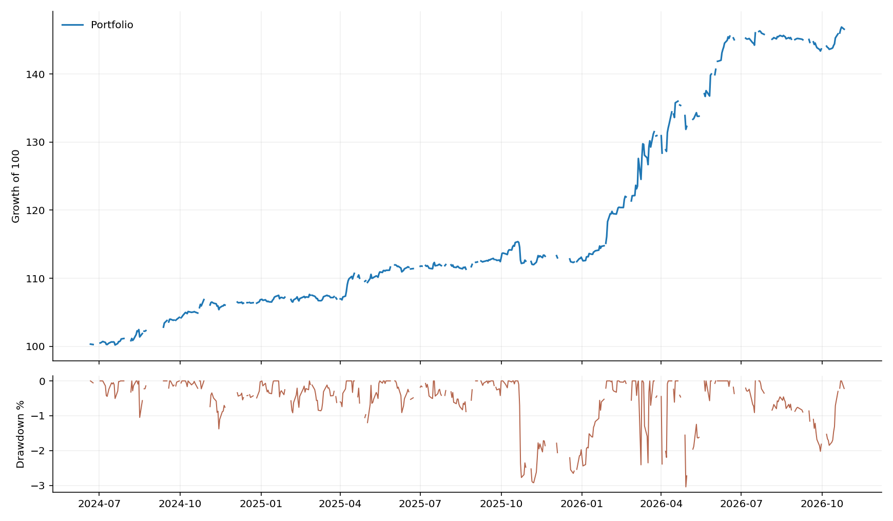
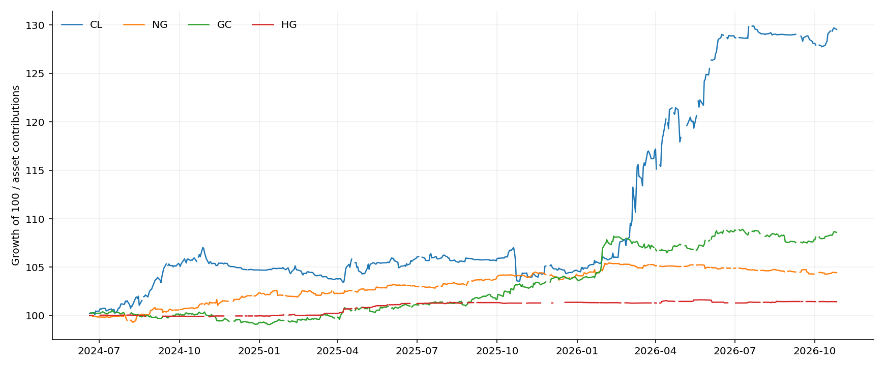

Archived independent replay of the frozen ten-rule CL/NG/GC/HG intraday schedule and per-asset contributions.
Archived observations: 2024-06-20 to 2026-10-26. Figures are normalized research returns after the archived cost model, not brokerage P&L.


| series | observations | net_sharpe | total_return | max_drawdown |
|---|---|---|---|---|
| CL | 573 | 1.8913 | 0.2953 | -0.0335 |
| NG | 561 | 1.2864 | 0.0444 | -0.0112 |
| GC | 557 | 1.6285 | 0.0860 | -0.0159 |
| HG | 519 | 1.5458 | 0.0145 | -0.0032 |
| Portfolio | 470 | 2.8556 | 0.4656 | -0.0304 |
The complete original research, report generators and sensitivity tests are in the repository. Supply the private input manifest to replay them rather than treating this chart as independent validation.